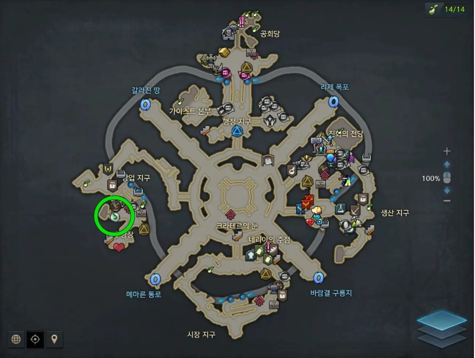

기억의 오르골은 오래 전 사라진 고대 문명의 잔재로, '기억의 구슬'을 모아 연주되는 장치입니다.
기억의 구슬에는 주목 받지 못하는 평범한 존재들이 펼쳐내는 위대한 이야기가 담겨있습니다.
여러 지역에서 다양한 모험을 통해 단서를 모아 실마리를 획득하고, 퀘스트를 진행하여 ‘기억의 구슬’을 모아보세요.
기억의 구슬 #1
루테란 오즈혼 구릉지
1. [어느 시인의 편지] 퀘스트 수령 2. [연주되는 기억의 오르골] 퀘스트 완료
'두 번째 구원'이 당신을 찾아갑니다.
기억의 구슬 #2
환영나비 섬
1. 환영나비 섬 내부의 퀘스트 완료
2. 내부 감시자와의 대화
3. 환영나비 섬 3번의 방문 이후
로헨델의 은빛물결 호수로 이야기가 이어집니다.
'Dreaming your melody'가 당신을 찾아갑니다.
기억의 구슬 #3
베른 남부 칸다리아 가도 우측 상단
1. 수염샵 직원에게 상호 작용과 대화 수행
2. [이게 바로~] 퀘스트 수령
3. 베른 성으로 이동, 길드 담당자 로이터와 대화
4. [레기오로스의 수염이라고!] 퀘스트 완료
기억의 구슬 #4
슈테른 좌측 아래 아우켄슈테른사 앞/h6>
1. 아우겐슈테른 기자 NPC에게 상호작용
[처음은 누구나 서툴다] 퀘스트 수령
2. '알딸딸한 감사관' 칭호 착용 후 퀘스트 진행
'Everything Shines for Life'가 당신을 찾아갑니다.
퀘스트 수행 위치(슈테른)

기억의 구슬 #5
루테란 해무리 언덕
1. 해무리 언덕에서 고고학 탐사를 통해
보물 상자에서 '수상한 종이봉투' 획득
2. 루테란 성 남쪽 성문 입구로 이동
3. '실리안의 기사' 칭호 착용 후 퀘스트 진행
'기억 저편의 자장가'가 당신을 찾아갑니다.
기억의 구슬 #6
파푸니카 니아 마을
1. '베테랑 모험가' 칭호 착용
2. 니아마을 귀환의 석상 좌측으로 이동
3. 초보자 npc에게 말 걸고 퀘스트 수행
기억의 구슬 #7
토토피아
1. 토토피아에서 [네발 동물 하체 논란] 퀘스트 수행
2. 애니츠 대륙 대도시 항구도시 창천으로 이동
3. [천부의 존엄성] 퀘스트 수행
기억의 구슬 #8
베른 북부 크로나 항구
1. 베른 북부 크로나 항구로 이동
2. npc 신디에게 말을 걸어
[새로운 터전, 새로운 출발!] 퀘스트 수행
기억의 구슬 #9
슈샤이어 리겐스 마을
1. 이런 물고기 낚아봤어? 업적 클리어
2. 리겐스 마을 칼날바람 언덕 쪽 낚시터로 이동
3. [연빙어 낚시] 퀘스트 수행
기억의 구슬 #10
루테란 성
1. 루테란 왕궁 앞 으로 이동
2. 우편 집배원 라넌에게 상호작용
3. [누명과 소명] 퀘스트 수행